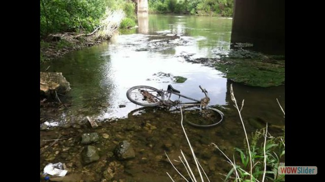
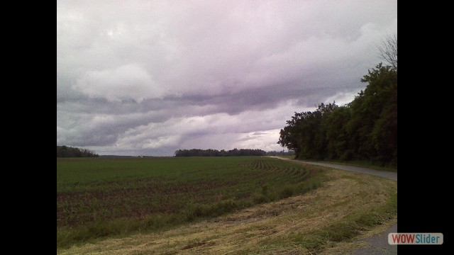
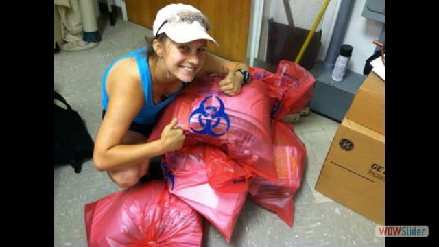
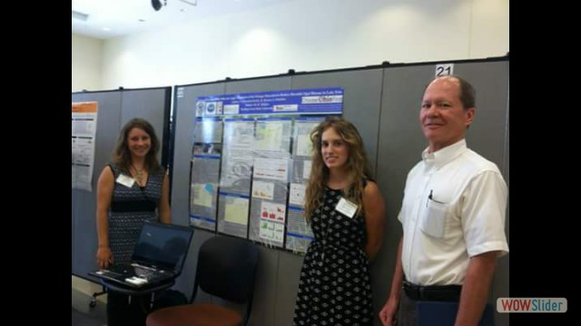
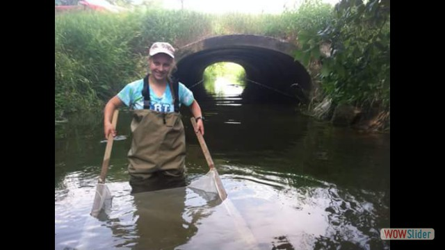
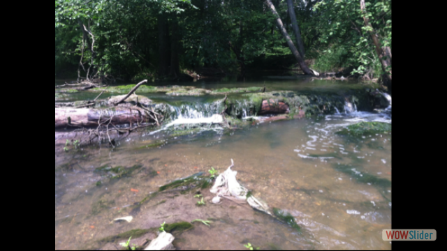
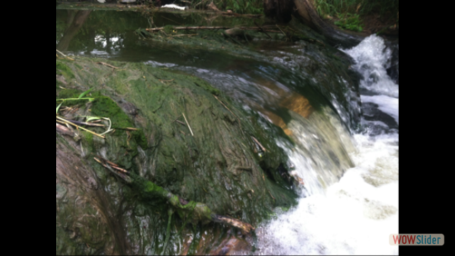
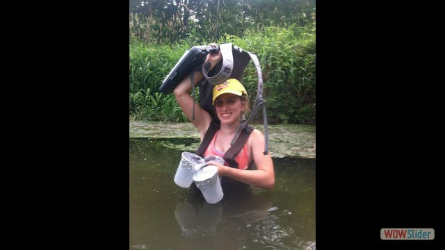
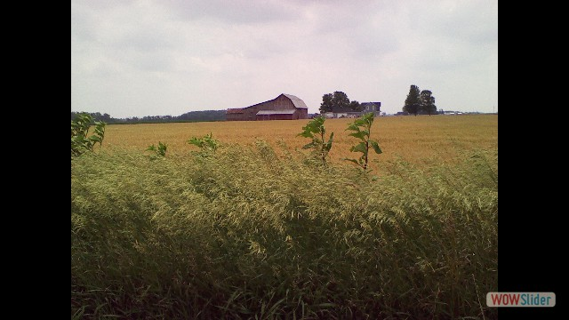

1 / 14

Bike rusting in the river main branch
2 / 14

Corn field in Wood county
3 / 14

Nadya disposing E. coli biohazard bags
4 / 14

Identifying macroinvertibrates
5 / 14

Log dam in the middle branch
6 / 14

Nadya, Dr. Midden, and me at the SETGO symposium
7 / 14

Collecting macroinvertibrates
8 / 14

Natural log dam
9 / 14

Natural log dam in the Portage river
10 / 14
Portage water team: Nadya, Sherman, and me
11 / 14

Tree collecting algae in the main branch
12 / 14

Waterfall creating a jet scour
13 / 14

Sampling water in the Portage river, Ohio
14 / 14

Wheat field in Wood county, OH